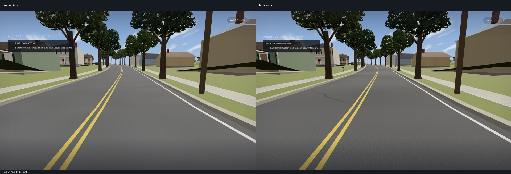
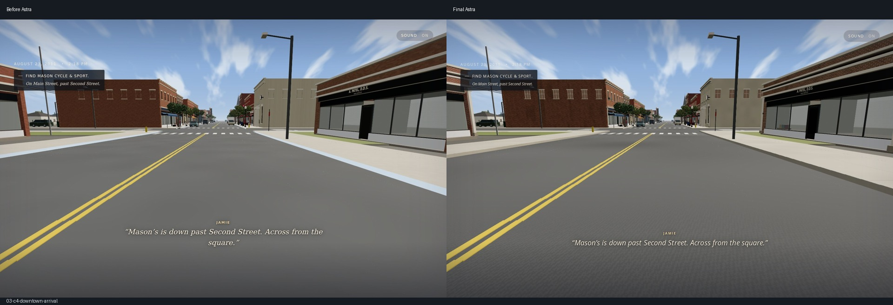
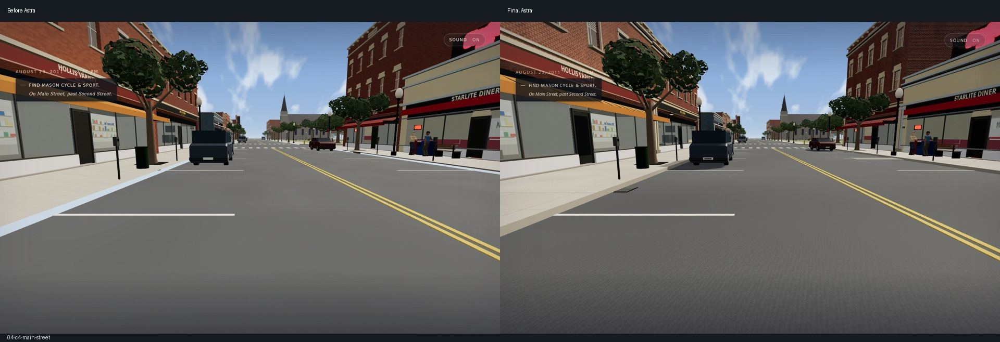
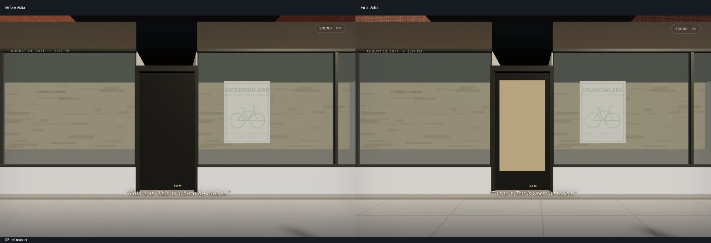
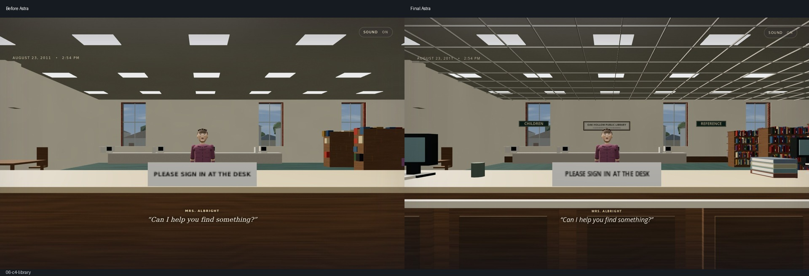
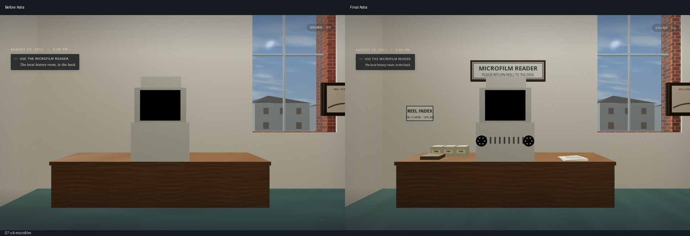
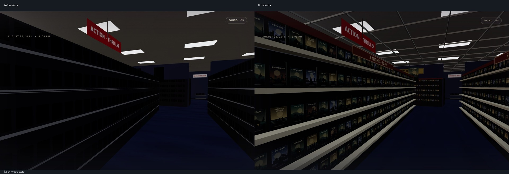
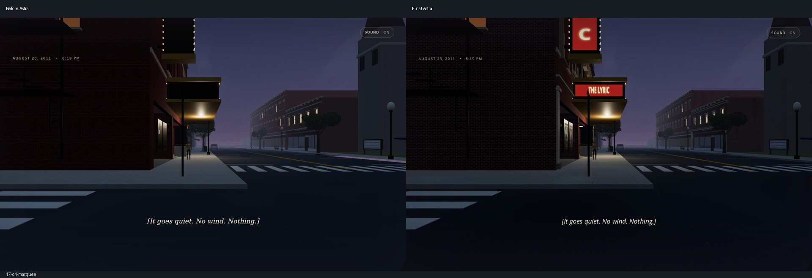

Saved pre-Astra views beside the final polished runtime. Structural render counts are from software Chromium/SwiftShader; these are not real-GPU frame-rate measurements. The existing procedural game style is retained.







